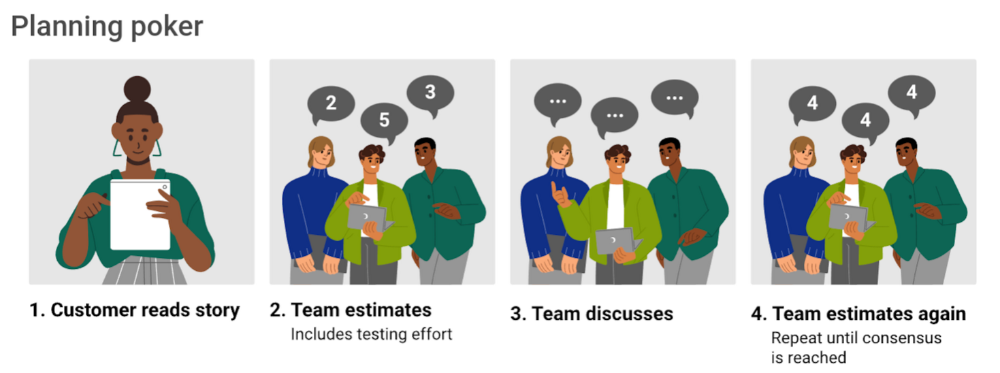

Module 3: Project Management
The Project Management Triangle (triple constraint, iron triangle)
Key factors to be balanced to ensure success of a project. The
constraints are interdependent. The Project manager must find balance
to meet project objectives and stakeholder expectations.
Make trade-offs.
Prevent scope creep.
Cost
Financial resources needed for successful completion of the project.
Changes in scope can affect cost.
Elements of cost include:
- Budget
- Number of team members
- Equipment and facilities
- Key opportunities
Time
Timeframe, deadlines for completion of requirements.
Changes in scope or resources can affect timeframe.
Elements of time include:
- Overall project timeline
- Hours worked
- Internal calendars and goal posts
- Time for planning
- Number of project phases
Scope
Clearly outlined work that needs to be done - features, functions,
deliverables, etc.
Increase in scope can lead to increased time and cost.
Elements of scope include:
- Complexity
- Quantity of requirements finished
- Output quality and strength - how many users it can handle
- Level of detail
- Number of complexity features
Backlog Refinement (backlog grooming)
Reviewing, prioritising and refining items in product backlog to ensure
team is working on most valuable and well-defined tasks.
- Schedule regular grooming sessions - often once per iteration.
- Invite key stakeholders (product owners, devs, etc.) for
refinement sessions.
- Review backlog - start by reviewing existing items - ensure they
are up to date and reflect current priorities and requirements.
- Prioritise items - prioritise backlog items with product owner
based on business value, customer needs, and strategic goals. Can
use framework like MoSCoW prioritisation (Must have, Should have,
Could have, Won't have).
- Break down epics - if there are large, high-level features or epics
in the backlog, break them down into smaller, more manageable
user stories. Each story should represent a valuable piece of
functionality that can be developed in a single sprint.
- Estimate user stories - estimate effort required to complete each
user story.
- Define acceptance criteria - clearly define acceptance criteria
for each user story - conditions that must be met to consider user
story complete.
- Remove or reprioritise items - remove outdated or less valuable
items from backlog based on new information.
- Groom technical debt - address any identified technical debt from
the development process - decide whether to tackle it immediately
or schedule it in future sprints.
- Update estimates and priorities after refinement.
- Document discussions from refinement sessions.
- Repeat regularly to facilitate smooth planning.
Task Prioritisation
Goals of task prioritisation
- Maximising value - most critical and valuable requirements can be
addressed first.
- Managing risk - minimise risk that high-priority items are not
completed or cost more later.
- Resource allocation - prioritise allocation of limited resources -
time, budget, personell - focus on most important and urgent
requirements.
- Stakeholder satisfaction - targets are met.
Prioritisation Methods
Choice of method depends on the context of the project.
- MoSCoW Prioritisation - requirements categorised into must-haves
(critical to project success), should-haves (important but not
critical), could-haves (nice to have but not necessary), and
won't-haves (not included in current release but may be considered
in future) to indicate priority.
- Numeric scoring - assign numeric scores to requirements based on
importance and urgency, and sort them based on score.
- Risk-based prioritisation - prioritise requirements based on their
potential impact on project risk.
- Value-based prioritisation - requirements assessed in terms of
potential business value or ROI.
- Story mapping - visualise requirements on a timeline to understand
flow and sequence of features, helping to prioritise.
- Weighted decision matrices - use matrix to evaluate requirements
based on criteria such as cost, value, and feasibility.
Story Point Estimation
Used in agile to estimate relative effort of complexity of user
stories.
Planning poker
